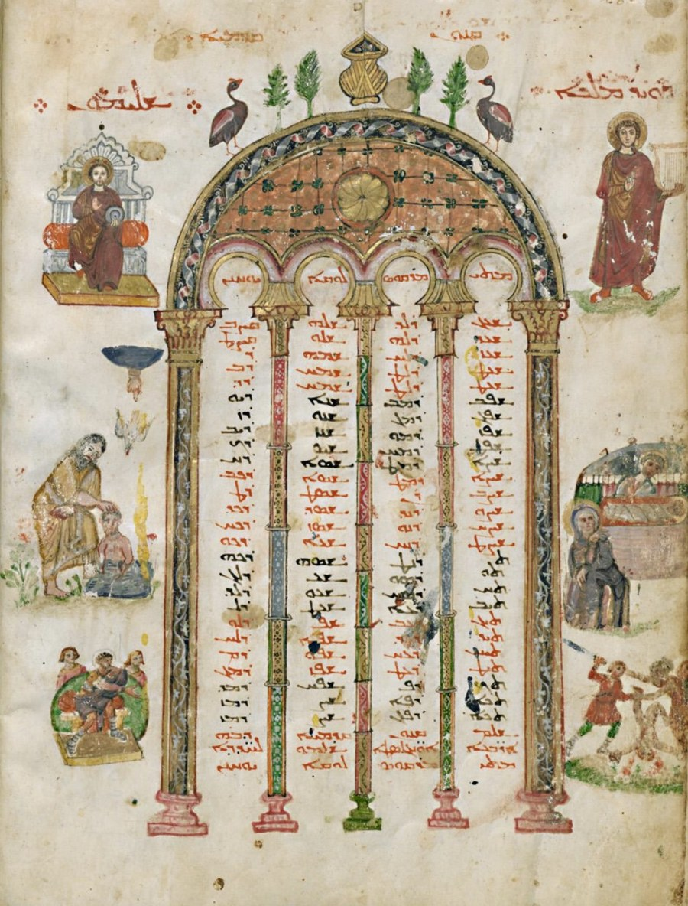

Rabbula Gospels: architectural canon tables with illumination.
ܐܦܥܠ ʾaphel
Quick Summary
Before diving into the Aphel stem, let’s review the foundational material from the first four lessons:
5-Question Warm-Up Drill
Answer these questions using what you’ve learned. Answers are in Section 9.
One of the most powerful features of Semitic languages — shared by Syriac, Hebrew, and Arabic — is the system of derived verbal stems. A single three-consonant root can generate multiple verbs with systematically related meanings, simply by modifying the vowel pattern and/or adding prefixes or affixes.
This is very different from Greek or Latin, where related meanings usually require entirely different words. In Syriac, once you know a root, you already know the building blocks of an entire semantic family.
The Three Major Active Stems
| Stem Name | Formation Pattern | Basic Meaning Shift | Example |
|---|---|---|---|
| Peal | Basic vowel pattern | Basic action / state | ܟܬܒ — ktab, “he wrote” |
| Paael | Middle root letter doubled | Intensive / Factitive | ܩܕܫ — qaddeš, “he sanctified” |
| Aphel | ʾa- prefix added | Causative | ܐܚܝ — ʾaḥī, “he caused to live” |
Cross-Linguistic Comparison
For those coming from Hebrew or Arabic, these correspondences will look familiar:
| Syriac | Peal | Paael | Aphel |
|---|---|---|---|
| Hebrew | Qal | Piel | Hiphil |
| Arabic | Form I | Form II | Form IV |
| Function | Basic | Intensive / Factitive | Causative |
For learners with a Greek background: Greek uses voice (active, middle, passive) and aspect to express some of these distinctions, but there is no exact parallel to the Semitic derived stem system. The Greek causative construction (e.g., ποιεῖν + infinitive) expresses what the Aphel does morphologically. Latin similarly uses circumlocutions (facere + infinitive) or prefix verbs for some causative senses.
Core Meaning: Causative
The Aphel stem expresses causative action — “to cause X to happen” or “to make X do Y.” In theological language, this is the stem of divine action: God ʾaḥī (gave life), God ʾaglī (revealed), God ʾaqreb (brought near).
Formation
maCCeC, cf. Peal participle)Comparison with Other Languages
Aphel Examples: Peal → Aphel
| Peal (Syr) | Root | Peal Meaning | Aphel (Syr) | Aphel Translit | Aphel Meaning |
|---|---|---|---|---|---|
| ܚܝܐ | ḥ-y-y | to live (Peal) | ܐܚܝ | ʾaḥī | to give life, save |
| ܩܪܒ | q-r-b | to draw near (Peal) | ܐܩܪܒ | ʾaqreb | to bring near, offer |
| ܢܦܩ | n-p-q | to go out (Peal) | ܐܦܩ | ʾappeq | to bring out, produce |
| ܢܦܠ | n-p-l | to fall (Peal) | ܐܦܠ | ʾappel | to cause to fall, throw down |
The Strong Root q-r-b in the Aphel
The strong root ܩܪܒ (q-r-b) means “draw near, approach” in the Peal stem (qreb). In the causative Aphel stem (ʾaqreb), it means “to bring near, to offer” — that is, “to cause someone or something to come near.” Because all three of its consonants are strong and remain visible in every form, q-r-b serves as our model paradigm for the Aphel in Sections 4–5.
Root: q-r-b | Stem: Aphel | Meaning: “to bring near, offer”
ܐܦܥܠ Perfect — Full Conjugation
| Person | Estrangela | Transliteration | Translation |
|---|---|---|---|
| 3 m.sg. | ܐܩܪܒ | ʾaqreb | he brought near |
| 3 f.sg. | ܐܩܪܒܬ | ʾaqrbat | she brought near |
| 2 m.sg. | ܐܩܪܒܬ | ʾaqrebt | you (m.sg.) brought near |
| 2 f.sg. | ܐܩܪܒܬܝ | ʾaqrebt(y) | you (f.sg.) brought near |
| 1 c.sg. | ܐܩܪܒܬ | ʾaqrbet | I brought near |
| 3 m.pl. | ܐܩܪܒܘ | ʾaqrebū | they (m.) brought near |
| 3 f.pl. | ܐܩܪܒ / ܐܩܪܒܝ | ʾaqreb | they (f.) brought near |
| 2 m.pl. | ܐܩܪܒܬܘܢ | ʾaqrebtūn | you (m.pl.) brought near |
| 2 f.pl. | ܐܩܪܒܬܝܢ | ʾaqrebtēn | you (f.pl.) brought near |
| 1 c.pl. | ܐܩܪܒܢ | ʾaqrebn | we brought near |
Formation Notes:
Comparison: Hebrew Hiphil Perfect
The Hebrew Hiphil perfect is structurally parallel to the Syriac Aphel perfect, with a causative prefix (הִ- hi- / הֶ- he-) and essentially the same suffix set:
| Person | Hebrew (Hiphil) | Transliteration | Translation |
|---|---|---|---|
| 3 m.sg. | הִקְרִיב | hiqrīb | he brought near (Hiphil of q-r-b) |
| 3 f.sg. | הִקְרִיבָה | hiqrībāh | she brought near |
| 1 c.sg. | הִקְרַבְתִּי | hiqrabtī | I brought near |
| 3 m.pl. | הִקְרִיבוּ | hiqrībū | they brought near |
Comparison: Arabic Form IV Perfect
Arabic Form IV (ʾaCCaCa) is cognate with the Syriac Aphel. The prefix ʾa- and the causative meaning are identical; only the internal vowel pattern differs:
| Person | Arabic (Form IV) | Transliteration | Translation |
|---|---|---|---|
| 3 m.sg. | أَرْسَلَ | ʾarsala | he sent (Form IV of r-s-l) |
| 3 f.sg. | أَرْسَلَتْ | ʾarsalat | she sent |
| 1 c.sg. | أَرْسَلْتُ | ʾarsaltu | I sent |
| 3 m.pl. | أَرْسَلُوا | ʾarsalū | they sent |
Root: q-r-b | Stem: Aphel | Meaning: “bringing near / offering”
The Aphel active participle expresses ongoing or habitual causative
action. The participle prefix is m- (as in all derived
stems), replacing the ʾ- of the perfect prefix
(ʾaqreb → maqreb).
| Form | Estrangela | Transliteration | Translation |
|---|---|---|---|
| m.sg. (active) | ܡܩܪܒ | maqreb | bringing near (m.sg.) |
| f.sg. (active) | ܡܩܪܒܐ | maqrbā | bringing near (f.sg.) |
| m.pl. (active) | ܡܩܪܒܝܢ | maqrbīn | bringing near (m.pl.) |
| f.pl. (active) | ܡܩܪܒܢ | maqrbān | bringing near (f.pl.) |
Formation Notes
Comparison with Hebrew and Arabic
KEY PATTERN: In all Syriac derived stems, the participle prefix is m-. This is one of the most consistent features of Syriac verbal morphology. If you see a verb beginning with m- that is not a Peal form, suspect a derived-stem participle.
Abstract Nouns and Key Theological Terms
The following twenty terms form the core theological vocabulary of early Syriac Christianity. Many are abstract nouns ending in -ūtā (with a single spirantized taw) derived from the same roots as the verbs you are learning.
| Estrangela | Transliteration | Meaning | Notes |
|---|---|---|---|
| ܚܝܐ / ܦܘܪܩܢܐ | ḥayyē / purqānā | life (pl.) / salvation | Two overlapping terms; ḥayyē often = “eternal life”; purqānā = “redemption” |
| ܓܠܝܢܐ | gelyānā | revelation, disclosure | From g-l-y; cf. Gk apokalypsis, Lat revelatio |
| ܫܘܕܪܐ | šūddārā | sending, mission | From šaddar; cf. Heb šālīaḥ (envoy), Gk apostolos |
| ܒܪܝܬܐ | brītā | creation, creature | From Peal brā; cf. Heb bārāʾ, Gen 1:1 |
| ܪܚܡܐ | raḥmē | mercy, compassion | Pl. of raḥmā; cognate with Heb raḥămīm, Arabic raḥma |
| ܕܝܢܐ | dīnā | judgment | Cf. Heb dīn (legal judgment), Arabic dīn (religion/judgment) |
| ܫܘܒܚܐ | šūbḥā | glory, praise | Cf. Heb kābōd; used in doxologies |
| ܛܝܒܘܬܐ | ṭaybūtā | grace, goodness | Abstract noun (-ūtā) from ṭāb (good); cf. Gk charis, Latin gratia |
| ܗܝܡܢܘܬܐ | haymānūtā | faith, trust | Abstract noun (-ūtā) from haymen; cf. Heb ʾĕmūnāh |
| ܟܐܢܘܬܐ | kēnūtā | righteousness, justice | Abstract noun (-ūtā) from kēn; cf. Gk dikaiosynē, Heb ṣĕdāqāh |
| ܚܛܝܬܐ | ḥṭītā | sin, transgression | From ḥ-ṭ-y; cf. Gk hamartia, Heb ḥēṭʾ |
| ܡܥܡܘܕܝܬܐ | maʿmūdītā | baptism | Lit. “immersion”; from ʿ-m-d; cf. Gk baptisma |
| ܨܠܘܬܐ | ṣlūtā | prayer | From ṣ-l-y; cf. Heb tĕfillāh |
| ܝܘܠܦܢܐ | yūlpānā | teaching, instruction | Abstract noun from y-l-p / ʾallep |
| ܢܒܝܘܬܐ | nbīyūtā | prophecy | Abstract noun (-ūtā) from nbīyā; cf. Heb nĕbūʾāh, Gk prophēteia |
| ܩܝܡܐ | qyāmā | covenant, resurrection | Double meaning: covenant (cf. Heb bĕrīt) and standing/resurrection |
| ܟܬܒܐ | ktābā | scripture, writing, book | From k-t-b; cf. Arabic kitāb, Hebrew kĕtābīm |
| ܒܘܪܟܬܐ | būrktā | blessing | From b-r-k; cf. Heb bĕrākāh, Arabic baraka |
| ܪܘܚܐ | rūḥā | spirit, wind, breath | Usually f. noun; cf. Heb rūaḥ, Arabic rūḥ, Gk pneuma |
| ܫܪܪܐ | šrārā | truth, reality | Cf. Heb ʾĕmet, Gk alētheia; from š-r-r (“to be firm/true”) |
Key Aphel and Related Verbs in Theological Context
| Estrangela | Translit | Stem | Meaning | Usage Note |
|---|---|---|---|---|
| ܐܚܝ | ʾaḥī | Aphel | to save, give life | Causative of ḥ-y-y (live); divine act par excellence |
| ܐܓܠܝ | ʾaglī | Aphel | to reveal, uncover | From g-l-y (also Peal glā “reveal”); 3 m.sg. spelled with final yodh |
| ܫܕܪ | šaddar | Paael | to send | Common verb (root š-d-r, preview of Lesson 6 Paael); cf. Heb šālaḥ |
| ܒܪܐ | brā | Peal | to create | Note: in Syriac this is Peal (not Aphel); cf. Heb bārāʾ |
| ܐܟܪܙ | ʾakrez | Aphel | to proclaim, preach | Denominative Aphel from kārōzā (herald); kerygmatic vocabulary |
| ܐܪܝܡ | ʾarīm | Aphel | to exalt, lift up | Causative of r-w-m (be high); cf. Heb hērīm |
| ܐܫܦܠ | ʾašpel | Aphel | to humble, lower | Causative of š-p-l (be low); antonym of ʾarīm |
| ܦܪܩ | praq | Peal | to redeem, deliver, save | Standard Peal verb for “redeem” (source of purqānā above) |
| ܩܕܫ | qaddeš | Paael | to sanctify, make holy | Preview of Lesson 6 Paael; from q-d-š (be holy); cf. Heb qiddēš |
| ܐܩܪܒ | ʾaqreb | Aphel | to bring near, offer | Causative of q-r-b (draw near); cf. Heb hiqrīb, Arabic Form IV ʾaqraba |
Yukhannan Preaches to the Crowds
Narrative note: This passage features heavy use of
the Aphel stem to describe God’s causative actions in history. Notice
the verbless clauses used for theological assertions (sentences 6 and 9)
and how indirect objects and pronominal objects are expressed with
prepositions + suffixes (lī, lāḵ,
lān, lḵūn, lhūn) that you learned
in Lesson 4.
Key Aphel forms in this passage: ʾakrez (proclaimed), ʾawdaʿ (made known), ʾaḥī (gave life/saved), ʾaglī (revealed), ʾaqrebtūn (you brought near/offered), ʾappeq (brought out), ʾaḥyat (gave life), ʾaqrbat (brought near).
Sentence 1
ܘܝܘܚܢܢ ܩܡ ܒܡܨܥܬ ܥܡܐ ܘܐܟܪܙ ܠܗܘܢ
w-Yūḥannan qām b-meṣʿat ʿammā w-ʾakrez lhūn
w- (and-) Yūḥannan (Yukhannan) qām (stood) b-meṣʿat (in-the-midst-of) ʿammā (the-people) w-ʾakrez (and-proclaimed) lhūn (to-them)
→ And Yukhannan stood in the midst of the people and proclaimed to them:
Sentence 2
ܡܪܝܐ ܫܕܪ ܠܝ ܘܐܘܕܥ ܠܟܘܢ ܐܘܪܚܐ ܕܚܝܐ
Māryā šaddar lī w-ʾawdaʿ lḵūn ʾūrḥā d-ḥayyē
Māryā (the-Lord) šaddar (sent) lī (me) w-ʾawdaʿ (and-made-known) lḵūn (to-you [pl.]) ʾūrḥā (the-way) d-ḥayyē (of-life)
→ “The Lord sent me and made known to you the way of life.”
Sentence 3
ܐܠܗܐ ܕܒܪܐ ܟܠ ܡܕܡ ܐܚܝ ܠܟܘܢ ܒܦܘܪܩܢܗ
ʾAlāhā d-brā kull meddem ʾaḥī lḵūn b-purqāneh
ʾAlāhā (God) d-brā (who-created) kull (all) meddem (thing) ʾaḥī (caused-to-live/saved) lḵūn (you [pl.]) b-purqāneh (by-his-redemption)
→ “God, who created all things, has saved you through his redemption.”
Sentence 4
ܗܘ ܐܓܠܝ ܠܢ ܪܐܙܐ ܕܛܝܒܘܬܗ
Hū ʾaglī lān rāzā d-ṭaybūteh
Hū (He) ʾaglī (revealed) lān (to-us) rāzā (the-mystery) d-ṭaybūteh (of-his-grace)
→ “He has revealed to us the mystery of his grace.”
Sentence 5
ܘܗܫܐ ܐܩܪܒܬܘܢ ܠܐܠܗܐ ܒܗܝܡܢܘܬܐ
w-hāšā ʾaqrebtūn l-ʾAlāhā b-haymānūtā
w- (and-) hāšā (now) ʾaqrebtūn (you [pl.] have-brought-near/drawn-near) l-ʾAlāhā (to-God) b-haymānūtā (by-faith)
→ “And now you have drawn near to God through faith.”
Sentence 6
ܗܢܘ ܫܪܪܐ ܕܡܠܟܘܬܐ ܕܐܠܗܐ
Hānaw šrārā d-malkūtā d-ʾAlāhā
Hānaw (This-is) šrārā (the-truth) d-malkūtā (of-the-kingdom) d-ʾAlāhā (of-God)
→ “This is the truth of the kingdom of God.”
Sentence 7
ܘܥܡܐ ܫܡܥ ܡܠܘܗܝ ܘܐܬܕܡܪ ܛܒ
w-ʿammā šmaʿ mellāw-hy w-ḥdī ṭāb
w- (and-) ʿammā (the-people) šmaʿ (heard) mellāw-hy (his-words) w-ḥdī (and-rejoiced) ṭāb (greatly)
→ And the people heard his words and rejoiced greatly.
Sentence 8
ܘܐܡܪ ܓܒܪܐ ܚܕ ܡܢ ܥܡܐ ܡܢ ܐܢܬ ܘܡܢ ܫܕܪ ܠܟ
w-ʾemar gabrā ḥad men ʿammā: man ʾant w-man šaddar lāḵ?
w-ʾemar (and-said) gabrā (a-man) ḥad (one) men (from) ʿammā (the-people) man (who) ʾant (are-you) w-man (and-who) šaddar (sent) lāḵ (you)
→ And a man from the people said: “Who are you, and who sent you?”
Sentence 9
ܥܢܐ ܝܘܚܢܢ ܘܐܡܪ ܐܢܐ ܥܒܕܗ ܕܡܪܝܐ
ʿnā Yūḥannan w-ʾemar: ʾenā ʿabdeh d-Māryā
ʿnā (answered) Yūḥannan (Yukhannan) w-ʾemar (and-said) ʾenā (I) ʿabdeh (servant-of) d-Māryā (the-Lord)
→ Yukhannan answered and said: “I am the servant of the Lord.”
Sentence 10
ܗܘ ܐܦܩ ܠܝ ܡܢ ܡܕܒܪܐ ܘܐܟܪܙܬ ܠܥܡܗ
Hū ʾappeq lī men madbrā w-ʾakrzet l-ʿammeh
Hū (He) ʾappeq (brought-out) lī (me) men (from) madbrā (the-wilderness) w-ʾakrzet (and-I-proclaimed) l-ʿammeh (to-his-people)
→ “He brought me out from the wilderness, and I proclaimed to his people.”
Sentence 11
ܘܪܘܚܐ ܕܐܠܗܐ ܗܝ ܕܐܚܝܬ ܠܝ ܘܐܩܪܒܬ ܠܝ ܠܡܠܟܘܬܗ
w-rūḥā d-ʾAlāhā hī d-ʾaḥyat lī w-ʾaqrbat lī l-malkūteh
w- (and-) rūḥā (the-Spirit) d-ʾAlāhā (of-God) hī (she-is) d-ʾaḥyat (who-gave-life) lī (to-me) w-ʾaqrbat (and-brought-near) lī (me) l-malkūteh (to-his-kingdom)
→ “And it is the Spirit of God who gave me life and brought me near to his kingdom.”
Exercise 1: Stem Identification
Identify each verb form as Peal or Aphel, give its person/number/gender, root, and English meaning.
| # | Estrangela | Transliteration |
|---|---|---|
| 1 | ܐܟܪܙ | ʾakrez |
| 2 | ܟܬܒ | ktab |
| 3 | ܐܚܝ | ʾaḥī |
| 4 | ܐܙܠ | ʾezal |
| 5 | ܐܩܪܒ | ʾaqreb |
| 6 | ܡܩܪܒ | maqreb |
| 7 | ܫܡܥ | šmaʿ |
| 8 | ܐܦܩ | ʾappeq |
| 9 | ܟܬܒ | kāteb |
| 10 | ܐܓܠܝ | ʾaglī |
Exercise 2: Conjugation Drill
Fully conjugate the following two Aphel verbs in the perfect (all 10 persons) and the participle (all 4 forms). Use the paradigm in Sections 4–5 as a model.
Exercise 3: Translation Drill (Syriac → English)
Translate the following sentences into English. All contain Aphel forms or theological vocabulary from this lesson.
Exercise 4: Production Drill (English → Syriac Aphel)
Render the following causative sentences into Syriac using the Aphel stem. More than one correct answer may exist.
Exercise 5: Reading Comprehension
Re-read the story in Section 7, then answer the following comprehension questions in complete Syriac sentences if possible, or in English.
Section 1 Warm-Up
Exercise 1: Identification
| # | Stem | Person | Root | Meaning |
|---|---|---|---|---|
| 1 | Aphel | 3 m.sg. | k-r-z | he proclaimed |
| 2 | Peal | 3 m.sg. | k-t-b | he wrote |
| 3 | Aphel | 3 m.sg. | ḥ-y-y | he gave life / saved |
| 4 | Peal | 3 m.sg. | ʾ-z-l | he went |
| 5 | Aphel | 3 m.sg. | q-r-b | he brought near |
| 6 | Aphel Ptcp | m.sg. | q-r-b | bringing near |
| 7 | Peal | 3 m.sg. | š-m-ʿ | he heard |
| 8 | Aphel | 3 m.sg. | n-p-q | he brought out |
| 9 | Peal Ptcp | m.sg. | k-t-b | writing / writer |
| 10 | Aphel | 3 m.sg. | g-l-y | he revealed |
Exercise 2: Conjugation Drill
Exercise 3: Translation
| # | Translation |
|---|---|
| 1 | God saved his people. |
| 2 | Yukhannan proclaimed to his disciples. |
| 3 | He brought them out of prison. |
| 4 | The Spirit revealed the truth. |
| 5 | The Lord brought us near to his kingdom. |
| 6 | I am proclaiming to you the way. |
| 7 | You (m.sg.) have exalted your servant. |
| 8 | This is the teaching of the kingdom. |
Exercise 4: Production (sample answers)
Exercise 5: Comprehension
| # | Answer |
|---|---|
| 1 | The Lord sent him and made known (ʾawdaʿ) to them the way of life (ʾūrḥā d-ḥayyē). |
| 2 | ʾaḥī (saved/gave life), ʾaglī (revealed), ʾaqrebtūn (you have drawn near / offered). |
| 3 | “Who are you, and who sent you?” (man ʾant w-man šaddar lāḵ?) |
| 4 | As the servant (ʿabdeh) of the Lord (d-Māryā). |
| 5 | The Lord (Hū, referring to Māryā) brought him out of the wilderness (s. 10), and the Spirit of God (rūḥā d-ʾAlāhā) gave him life and brought him near to his kingdom (s. 11). |
THE APHEL STEM — FORMATION RULES
| Feature | Rule | Example |
|---|---|---|
| Perfect prefix | ʾa- (Alaph) before root | ʾa + R1 + R2 + e + R3 |
| Perfect 3 m.sg. | ʾa + R1R2eR3 (no suffix) | ʾaqreb, ʾakrez, ʾaḥī |
| Suffix set | Same as Peal perfect | -at, -t, *-t(y)**, -et, -ū, zero/-y, -tūn, -tēn, -n |
| Participle prefix | m- before stem | m + a + R1 + R2 + e + R3 |
| Participle m.sg. | maR1R2eR3 | maqreb, makrez, mappeq |
| Participle suffixes | Same as all participles | -ā (f.sg.), -īn (m.pl.), -ān (f.pl.) |
| Core meaning | Causative | “to cause X to happen” / “to make X do Y” |
Meaning Pattern
PEAL (basic) + ʾa- prefix = APHEL (causative) “to X” → “to cause to X” / “to make X happen” ḥ-y-y: live → ʾaḥī: give life/save | q-r-b: draw near → ʾaqreb: bring near | n-p-q: go out → ʾappeq: bring out
Comparative Summary: Three Active Stems
| Stem | Meaning | Perfect 3 m.sg. | Participle m.sg. | Translation |
|---|---|---|---|---|
| Peal | Basic | ktab (ܟܬܒ) | kāteb (ܟܬܒ) | “he wrote” / “writing” |
| Paael | Intensive / Factitive | qaddeš (ܩܕܫ) | mqaddeš (ܡܩܕܫ) | “he sanctified” / “sanctifying” |
| Aphel | Causative | ʾaqreb (ܐܩܪܒ) | maqreb (ܡܩܪܒ) | “he brought near” / “bringing near” |
Remember: In all derived stems (Paael, Aphel, Ethpeel, Etpaael, Ettaphal), the participle always takes a m- prefix. This is your clearest signal that you are reading a derived-stem participle.
The following 15 high-frequency Aphel verbs expand your repertoire of causative verbs in Syriac narrative.
| Estrangela | Transliteration | Gender/Type | Meaning |
|---|---|---|---|
| ܐܠܒܫ | ʾalbeš | verb | clothe |
| ܐܦܩܕ | ʾapqed | verb | entrust, charge |
| ܐܪܡܝ | ʾarmī | verb | cast, put |
| ܐܩܝܡ | ʾaqīm | verb | raise up, establish |
| ܐܣܓܝ | ʾasgī | verb | multiply, increase |
| ܐܘܟܠ | ʾawkel | verb | feed |
| ܐܘܬܒ | ʾawteb | verb | seat, settle |
| ܐܥܠ | ʾaʿel | verb | bring in |
| ܐܣܩ | ʾasseq | verb | bring up |
| ܐܚܬ | ʾaḥḥet | verb | bring down |
| ܐܦܢܝ | ʾapnī | verb | turn back, convert |
| ܐܫܠܡ | ʾašlem | verb | hand over, deliver |
| ܐܫܟܚ | ʾeškaḥ | verb | find, be able |
| ܐܘܒܕ | ʾawbed | verb | destroy, lose |
| ܐܘܕܥ | ʾawdaʿ | verb | make known |